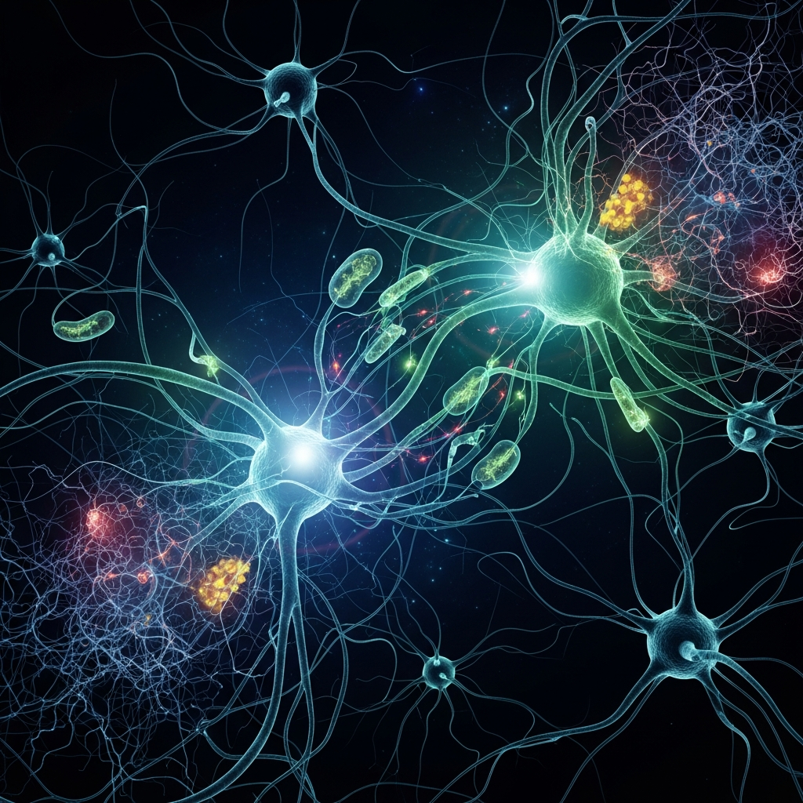

You Never Stop Learning: The Aging Brain's Hidden Capacity

The Myth of the Static Brain
For generations, we have been told that the brain is a finite vessel, peaking in potential during our youth and inevitably weathering down as we age. We’ve all heard the cliché about old dogs and new tricks—a phrase that suggests our neural architecture is set in stone by middle age. It’s a convenient, if defeatist, way to view cognitive aging: a slow, unavoidable erosion.
But the reality is far more interesting. Recent neurological research tells a different story, one where the brain doesn't just decline; it adapts. This capacity to restructure and reorganize itself—known as neuroplasticity—doesn't have an expiration date. It is a fundamental, lifelong feature of human biology, constantly shifting in response to what we do, how we live, and what we choose to learn.
The Architecture of Adaptation
What we once called cognitive decline is now better understood as a change in the *nature* of our plasticity. While the brain’s synaptic pathways in regions like the hippocampus do undergo structural changes as we age, these are not signals of permanent loss. Instead, they reflect a dynamic, living system that remains inherently responsive. The human brain is not a static organ; it is an active participant in its own maintenance.
When we seek out new experiences, learn new skills, or push our cognitive boundaries, we aren't just filling time—we are actively engaging with the brain’s inherent ability to forge new pathways. This isn't just about 'using it or losing it' in a superficial sense; it's about acknowledging that the brain retains the biological machinery for change from birth until the very end.
Looking Forward
If we treat our cognitive health as a continuous project rather than a race against time, the implications for how we age are profound. We aren't merely passive observers of our own cognitive shifts. By modulating our environment and staying curious, we can influence the very processes that define our mental flexibility. The aging brain is not an ending; it is a different chapter in a story of constant, lifelong development.
- https://www.frontiersin.org/journals/aging-neuroscience/articles/10.3389/fnagi.2024.1428244/full
- https://www.pacificneuroscienceinstitute.org/blog/brain-health/neuroplasticity-and-healthy-aging-what-you-need-to-know/
- https://www.sciencedirect.com/science/article/abs/pii/S1568163724003878
- https://pmc.ncbi.nlm.nih.gov/articles/PMC6128435/
- https://pmc.ncbi.nlm.nih.gov/articles/PMC10741468/
— Chumley, 2026-03-21